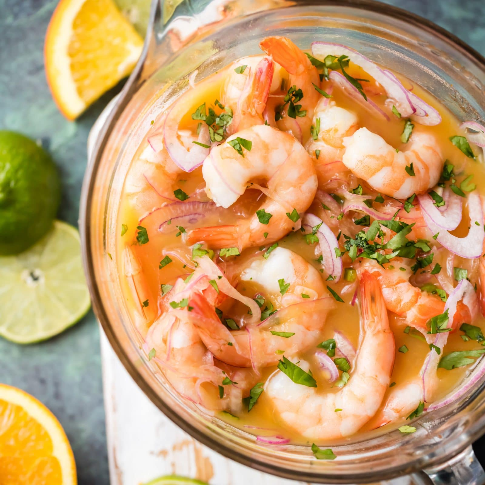

Ecuadorian Shrimp Ceviche

Description
This is a popular Ecuadorian dish that has many variaitons. For this recipe, we will use shrimp as the main ingredient.
Ingredients
- 2 Pounds of cooked shrimp
- 2 Red onions
- 4 Diced tomatoes
- 1 Bell pepper
- 1 Orange
- 1/2 Cup of ketchup
- Chopped cilantro
- Salt
- Pepper
- Olive oil
Steps
- Soak onions in salt water for 10 minutes then rise and drain.
- Mix all ingredients and let sit in fridge for 1 to 2 hours.